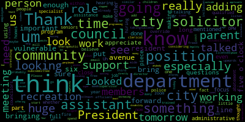

AI-generated transcript of City Council Committee of the Whole 03-18-25
English | español | português | 中国人 | kreyol ayisyen | tiếng việt | ខ្មែរ | русский | عربي | 한국인
Back to all transcripts
[Bears]: City Council Committee of the whole meeting, March 18 2025.
[Hurtubise]: Councilor Callahan, Vice President Collins. Vice President Collins is absent. Councilor Lazzaro. Councilor Leming.
[Leming]: Present.
[Hurtubise]: Councilor Scarpelli.
[Leming]: Present.
[Hurtubise]: Councilor Tseng.
[Leming]: Present.
[Hurtubise]: President Bears.
[Bears]: Ah, there we go. Thank you. Action and discussion items 25 and Vice President Collins is present. So seven present. 25-039 resolution regarding schedule of the annual budget process for fiscal year 2026 be resolved by the Medford city council that the council president requests councilor submit budget recommendations to the clerk by Thursday, March 13th for consideration in a committee of the whole meeting on Tuesday, March 18th at 6pm.
That's tonight. be it further resolved that based on the budget ordinance and discussions with the administration, the city council and city administration will follow the following budget schedule for fiscal 26. By March 13th, councilors submit individual budget recommendations. March 18th at 6 p.m., committee of the whole meeting to discuss budget recommendations. Tomorrow night, March 19th at 6 p.m., there's a joint meeting of the city council and the school committee in the chambers to receive a financial update and discuss the fiscal 26 budget process. Next Tuesday, March 25 2025 assuming we report out recommendations tonight, the city council will have a collective recommendation to send to the mayor. Last year we also sent everyone's individual recommendations so all of that will be included. From April 15th to May 21st, the council would hold preliminary budget meetings with department heads. And by Friday, May 31st, the mayor would submit a comprehensive budget proposal to the city council. And then there's a list of the draft schedule of the meetings from April 15th to May 21st. Those are Tuesday, April 15th, Tuesday, April 29th, Wednesday, April 30th, Tuesday, May 13th, Tuesday, May 20th, and Wednesday, May 21st. and we have budget recommendations from everybody except for me. So we will move through that. Just a quick overview. Essentially what we did last year is individual councilors discussed their budget proposals, and then we, the councilors made a motion to include some of them in a joint proposal that came from the council as a body as a whole, and then we submitted that joint recommendation, collective recommendation, as well as the individual recommendations from individual Councilors. So I think that can basically be our process again. If anyone else wants to make a motion to do it differently, I think that's totally fine. And we can go around, if folks wanna signal in or raise their hands on Zoom and share what their recommendations are for the budget for fiscal 26. I see Councilor Leming and I'll recognize Councilor Leming.
[Leming]: Thank you, President Bears. I have the, I believe the shortest submitted recommendation of anybody here. And my recommendation is also reflected in that of several other Councilors. It's just to allocate funding for a therapeutic recreation specialist and a office manager for Medford Recreation Department, which follows several meetings that this body had on the topic, the likely impact of that would be $125,000 a year, although that would likely be determined by the mayor and Kevin Bailey. I think the only other thing that the only other priority that I had that was particularly on my mind, but I'm not sure if this would be a budget request per se, so it wasn't included, was ensuring that enough capital earmarks are available to create either a nexus study for the new affordable housing linkage program or about $150,000 for a study to overhaul the entirety of the capital improvements program. So all of the linkage buckets that the city has. Again, I'm not sure if that would be a budget request or if a free cash earmark would go under that, but that's what I have. So thank you.
[Bears]: Thank you, Councilor Leming. Anyone want to go next? Councilor Lazzaro.
[Lazzaro]: Thank you. I wanted to focus on safety in the city. So my first request is something that a couple of other Councilors recommended, which is adopting the suggestions of the Medford Bicycle Advisory Commission. We don't I don't have a dollar amount attached to that. I'm not sure what it would all cost there. I think that they are relatively reasonable requests. The only one that is a significant spend would be hiring the hiring somebody in DPW whose focus would be, or no, no, no. Yes, I think it's DPW. It's the traffic person who would focus on traffic engineer whose focus would be on walking, biking and transit. But that's already a position that's somebody who was hired at one point. is an open position right now. So it's not it's not a crazy reach. I don't think any of these are crazy reaches. But the second one is something that is was not recommended by other Councilors and is something that people may not be aware of. But our new fire chief let me know that Um, Medford doesn't have a dive team on in the fire department. Um, surrounding towns and cities do have dive teams. We have a good number of boat clubs. We have a lot of waterways in Medford and lacking a dive team is a sort of whole an opportunity in our public safety. So after we had a very notable drowning in the summer of 2019, I believe, 10 of our firefighters took it upon themselves and began the training to become certified for underwater search and rescue. But to have a full dive team, you need 12 people. So he, Chief Evans did, went and got an independent estimate for what it would cost to train, fully train, finish the training of the 10 people who started the training. I think they have two more steps to go and do a full training for two more people. And then the equipment that it would take, and it would cost 123, I think. 123 22 yeah about $123,000 so I think that's well worth it. I think it would be. An excellent sort of commendation to the people that started that training and. it would just be general, um, best practice for the city to have that kind of resource. And, um, I just think it's a boost morale. I think it's good for everybody in town. So thank you.
[Bears]: Thank you, Councilor Lazzaro. Go to Councilor Scarpelli.
[Scarpelli]: Thank you, Council President. Please forgive me. It's been a long week and I appreciate taking my email today. And I know that before I had a few questions that as I go through, I think the administrative assistant for the Recreation Department, I think it would be cost efficient considering we're using members of that department that are making upwards close to $100,000 to spend probably a third of their time doing clerical work that could be done with maybe even a part-time employee or a full-time administrative assistant. I think that would be a huge plus for that department in the city. I think the The role of the, um, the therapeutic position for the recreation department. As the director mentioned, we have a person that's already working for the department that's trained and licensed. But having that person freed up to do those positions, I think would be a huge. add to our community, especially as we focus on adding so many of our new programs for children with disabilities. And I think that really stretching or adding a role as another program supervisor in that department to free that person up would be a huge success for us. Um, I think the other piece that was has been mentioned, I know that tomorrow will be another meeting at five o'clock with the parents that have came and talked with us to this council and subcommittee. I think that having an inclusion specialist within the city, whether we look at it as a part time role to start and then as a full time role, I think that the if we listen to the parents they really talked about adding that position that we need something similar to that in recreation but having that position city-wide where it's not looked at just as programming but for our students with disability as they age out and become adults and we look into offering assistance and whether it comes to job assistance or housing. I think that's the position that's really that I've heard that talking to the residents is something that's super important. I think that something that I'm a little perplexed why my colleagues didn't bring any, at least all of them we shouldn't but haven't, but I think we should all really focus on bringing a city solicitor assistant city solicitor and I think having the assistant city solicitor like we asked for that's working with the with the the city council directly I think is important I think that when you put that position out with such a low number we're not going to get qualified or even any applicants as we can see that we're on we're working close to four years now but So I think increasing that line to bring in a qualified city solicitor, assistant city solicitor, especially when you see the money that we're wasting and using on outside council. And the other piece that, you know, where residents have questions legality wise and they don't have an access to anybody at city hall to help them navigate. And as you can see, it's caused some disturbance within our community because A simple attorney talking to a resident, um, could have stopped a lot of negativity and, um, and what was going on with been going on and dividing this community. Um, I had just got off the phone a little while ago with a representative from the fire department. I think that not understanding or knowing what the, um, hiring processes we're hearing that there's going to be a huge class going out soon for the fire department. So that's something that I'll bring up. But I know that they're in the works with that. Um, I know that put in funding our police department and looking at the avenues that we wanted that we were looking forward to make it the police department that everybody's proud of. I think that they've done such a great job, but. From what I'm hearing, it's not the fact that we're not hiring, the fact that there aren't enough people to hire. So I think all of us have talked about the increase in the past for DPW because of, you know, I know the mayor's, the override was put in and it'll be interesting to see what this $500,000 for this that's going to save our streets and sidewalks. So I think that that's something that we hear calls about every single day. I'm sure all of you do, but making sure that we work with our commissioner to fill the needs and the DPW department. And then lastly, I know that I believe in last year's budget, we cut the line substantially for the abatement process and especially after the override and our most vulnerable members of the community that reached out to me looking for support with tax relief and looking at different abatement. I think we need to look at that line and make sure that we give the assessor enough support that if people are applying that our homes are assessed correctly and our, especially our most vulnerable members of this community, which mostly are seniors, homeowners, that aren't being pushed out of their homes because we're not giving them enough avenue to support them. So I know that my list is long, and I appreciate you listening, Mr. President, and to my fellow councilors, so thank you.
[Bears]: Thank you, Councilor Scarpelli, and I will make sure that your list is included in the packet that goes out after the meeting.
[Scarpelli]: Thank you.
[Bears]: Thanks. Councilor Callahan, and then Councilor Tsengh, and then Councilor Collins. Councilor Callahan.
[Callahan]: Thank you. So I do support many of the other items that other folks have brought up. I'm just going to talk about the two that I put in that have been projects that I have been working on for quite a few months. So one of them is about the volunteer tree planting program. I have been working with folks in Trees Medford and also talking to tons of volunteers about this program. We did have the DPW commissioner come in to the committee to speak about what it would take to get this program off the ground. And let me just say a little bit about why it's important that, you know, we do lose about twice as many trees as we plant every year. And yes, we live, we, you know, a third of Medford is the fells. We have lots of trees. I think if you you know, live in the kind of northern part of Ward 6, you feel like there's lots and lots of trees, but if you live south of the river, you really, and especially if you've lived there for a long time, I talk to many people who say that they have lived on their street for decades, and it used to be a canopy of trees, and you look now, and it is barren. This depresses home prices. It causes us to have heat islands, makes people pay more for heating in the winter, for cooling in the summer. There's so many reasons. It doesn't clean our air from pollution. There's so many reasons why we need to be replacing these trees. Anecdotally, you can just see on my street, not that my street is any more important than anyone's street, but on my street, you can see these little squares where there used to be a tree planted in front of every house. And now, on the whole block, there is one remaining tree. So I really believe that with our small budget in Medford, with our small budget and our mighty residents, mighty in their willingness to volunteer, I think that we can solve this problem with very little addition to the budget. And we can do it through activating our community and getting people involved in community events, meeting their neighbors, And the DPW commissioner said that all it would take would be one staffer, like a halftime staffer, who was a volunteer coordinator. So that's my first request. My second request is a halftime person involved in housing to run a home sharing program. And again, I've been meeting with our housing person and other, you know, many other residents. You know, we've been meeting for months. We have met with people who run the sort of national home sharing organization that helps people start home sharing programs in their cities. I'll tell you a little bit about the idea behind home sharing. In our city, according to our senior center, I hope I am not incorrect if I'm not wrong. What they said is that we have a larger percentage of seniors, people over 65 than we have ever had in Medford. And the reality is that many of those people live in houses that have four or five bedrooms. And As I have talked to seniors, both of the senior center, you know, as I was knocking on doors people that I, you know, interact with some of these folks that I've been meeting with many many seniors here in Medford would like to downsize or they are worried about aging in place. but they either, the rent is getting hard to, sorry, they could use a little bit more financial security or they need a little help around the house. We are not the only city facing this kind of issue. It is really interlocked with our housing crisis because 50 years ago, we had 9,000 more people living in the city with less housing. So our problem is that we have fewer people per bedroom. We have one person living in a three-, four-, five-bedroom house, and that isn't how it used to be, and that isn't how it could be. So we can really help both our seniors to help them to age in place help them to be financially comfortable. And we can also help our housing crisis by helping to solve this problem. And what a lot of other cities are doing is they're starting a home sharing program and it's a matchmaking service a very hand holding personalized matchmaking service that ensures that older folks who have extra bedrooms can find a person who usually it's some mixture of financial payment. They call them hosts and guests, kind of like Airbnb. It's a mixture of financial payment and service. So they can help take out the trash. They can help do a few things around the house for someone who is older and needs a little bit of help. I think this program could be really successful in Medford and it could solve a lot of our sort of interlocking problems that we have that are basically because of demographics. And so that's something that again, I think would be a very big impact for a very small amount of money. Thank you.
[Bears]: Thank you, Councilor Callahan. I'll go to Vice President Collins.
[Collins]: Thank you, President Bears. Is my audio coming through okay?
[Bears]: It's a little quiet. Shane, do you think you could turn up the Zoom audio a little bit? Oh, I can do that. Thanks for showing me.
[Collins]: Great. Thank you, everybody. How's that? All right. Thanks so much. Well, thank you so much to my fellow councillors for your comments so far. It's exciting to be at the beginning of another budget process again with you all, and I'm grateful for all of everybody submitted, I think. very additive and thoughtful preliminary budget recommendations. It is, you know, the work ahead of us is funneling down the request from the Council into a tight, succinct list that we can hope to fit into the overall operating budget of things that we think are the most critical and most needed by the community this year, and I think that we're off to a strong start because I see a lot of overlap between a lot of different Councilors, based on the comments and feedback that we've all been hearing from residents over the past year and longer than that so I'll quickly summarize. The priorities that I submitted ahead of this meeting, and I'll skip the entire preamble. This goes without saying, but I think it is worth saying out loud that we cannot permit any reduction from the school committee's budgetary request for Medford Public Schools. It would be very important to me that we prioritize meeting that this year, as we always prioritize meeting that. Similarly, prioritizing meeting the library department budgetary request and maintaining at least level service and hours of operation. In parallel with what some other Councilors have mentioned about prioritizing the funding recommendations, the funding asks from the Medford Bicycle Advisory Committee, I'd like to see us fund one additional traffic engineer for a total of two within the Department of Traffic and Transportation to focus on walking, biking, transit, and the implementation of a vision zero and complete streets policy. I won't get too into the details here, obviously, that there's a lot of ground that such a position could cover. But other councillors have said a lot in this meeting about things, kind of things we can fund where we'd see a very big return on impact. And I think this is one of them, because these are the people who, if we're able to get them inside of City Hall, could help us out not just with responding to constituent concerns and doing things with the resources that we already have, but also applying for state and federal grants that would help us do the transformative road design and pedestrian and bicycle safety projects that we already know that we need. I will also mention funding a therapeutic recreation and inclusion specialist and an office manager for metric recreation. We heard a lot from the families of youth with disabilities about where these two positions would fit into the puzzle when it comes to making Medford recreation and just not even recreation, but participation citywide, more accessible for people with and without disabilities. And I think it's incredibly important that this year we start putting things into the budget that will move us closer towards a fully accessible future for Medford. I also recommend that we increase the budgeted amount for our city solicitor salary so that we can, God willing, this year fill that position, which I know we are all very, very keen to see that filled. My estimate was that infusing $36,000 into that line item would bring this into competitiveness with our neighboring municipalities. I'm not sure if we've received yet the classification and compensation study that could give us further guidance on what that should be raised to. And lastly, I'll just mention similar to in previous years, I'd like to see us maintain all grant funded personnel in the health department, the Office of Outreach and Prevention, the Office of Planning, Development and Sustainability. aligned with what I said about Medford's Bicycle Advisory Committee's funding recommendations. I'd like to see us increase our capital spending earmark for expanding our network of separated protected bike lanes, completing the bike master plan, and doing design studies for Vision Zero and Complete Streets policies. And this one, I think, is small dollars compared to things like salaries. But I think we should also be putting more money into installing and maintaining road safety equipment interventions, everything from bike racks and flex posts to increased signage, as well as planning new crosswalks where we already know that we need them, such as on Salem Street. Pardon me, just finding my notes that I toggled away from. I also wanted to co-sign recommendations that I've heard so far from a couple other councillors that I haven't mentioned. I'm really glad that Councilor Lazzaro brought up the dive team training for the Medford Fire Department. It seems to me that a lot of recommendations from many councillors have all been circling around safety improvements that will have such a vast qualitative impact. Improvement for the people of Medford. I think that we should really be focusing this year on things that will make life safer for the people of Medford so I think that talking about accessibility improvements talking about pedestrian cyclist and driver safety improvements talking about trainings that we can fund for our First responders that they can do a better job and do the do the job that they want to be doing making life ever safer for Medford residents is where we should be focusing in this budget cycle and I'd also like to just quickly co-sign the idea from Councilor Leming, funds to help us jumpstart our affordable housing linkage and update our linkage fees program. These are funds where if we invest them now, we can see a return on investment from, we can make it so developers in our community are paying into these funds that we already know that we need and that will manifest in better funding for infrastructure and better funding for affordable housing. Thank you.
[Bears]: Thank you and I'll go to Councilor Tseng.
[Tseng]: Thank you. Hi, everyone. It's really nice to hear all of my fellow Councilors bring in such important details and such important ideas from different walks of our city, from different facets of what our city government does. And I would like to start from the basics. And I'd love to co-assign my fellow Councilors Recommendations, particularly with regards to public safety and our infrastructure, making sure that pedestrians, cyclists and drivers all have safe roads to operate on. with regards to the investment in our accessibility and our inclusion when it comes to the activities that our children and teenagers have in Medford. And that means the therapeutic recreation specialist and full-time office manager for Medford Rec, which would also help a lot with the youth commission idea, which I'll talk about later. Um, I would also co-sign, um, Councilor Collins and Scarpelli's, um, idea. Um, their recommendation to increase the budgeted amount for the city solicitor's salary to, um, make sure that we are competitive with neighbouring municipalities. Um, general infrastructure spending when it comes, uh, I'd like to co-sign, um, ideas for general infrastructure spending as well. to make sure that we're doing the basics of city government, making sure that we are filling our potholes, fixing our streets. And I think with that being said, I would like to take this moment to also thank Bedford voters for passing the prop two and a half question last year, which will allow us to get a step forward on that. This budget process year after year really shows us as a city council and shows the city as a whole how budget constrained municipalities, including Medford are. And that vote in the fall really helps us this year to maintain financial stability, even with ongoing challenges that we face, including this random cuts to federal funding, and what most economists and what most business leaders predict will be rising cost of living. We, I would also like to do support the council, what Councilor Collins said in her memo about meeting the school committee's budgetary requests for the Medford public schools and meeting the library department's budgetary requests as well. We have these two amazing resources that so many Medford families rely on. And I think it's really paramount that we keep that at the front of our bucket, our items, our priorities going into this budget. And remember how crucial it is to our government's responsibility that we make sure that those services are well and up and running. Now, with regards to some of the ideas that that I brought up in my memo that haven't really been covered yet. A number of our projects as a city council have been going through the Resident Services and Public Engagement Committee. And the two biggest ideas that are reaching a decent amount of progress For us to consider putting it in the budget would be the Human Rights Commission and the Youth Commission. And in order to make sure that they operate well, to make sure that the representation on these two bodies are balanced, that we attract enough candidates of diverse experiences to serve on these commissions, and to make sure that they can carry out the day-to-day functions that we would expect a human rights commission, a youth commission to do, such as community events, reports, studies, a youth summit. I've suggested asking for $15,000 for the HRC and $20,000 for the youth commission. And these numbers come from discussions with city staff, with community leaders, and over the last two years about what our needs are and what logistically we need to get these two projects over the finish line. With that being said, some other stuff that I put in was making sure that we had a plan to update our city's financial software. I know Councilor Collins mentioned that in her memo as well. in more detail than I did. So that's a thank you Councilor Hollins for that. To make sure that we have the financial and assessing staff that we need, if we're looking at the tax reforms like the residential exemption, which I know Councilors want to discuss more. I think if we want to give ourselves that option, we need the staffing for it. I know that One of the complaints I hear from city staff, too, is about how the systems, in terms of tech systems that we have at City Hall, and don't ensure that departments do what they promise to do on time. So I think a great example of that is oftentimes HR needs more modern resources and technologies to be able to do their job well. And that's why I put that in my memo as well. And one issue I hear a lot from residents is the need for a real plan to address our child care crisis. It's such a financial strain on Medford families who have to organize child care and to not be able to find it and to have to go to different communities and fight with different and families from different communities on that issue. And I know that we've been making some progress on it, but we really do need to be making more progress on that. And so I view budget season as a time to also ask for more concrete plans for things. And I think this is a good chance for us, even if it doesn't make this budget, to ask for more concrete plans for the city administration on this issue. My last kind of bucket of recommendations centered more about maintaining funding. So making sure that things aren't cut. So maintaining our investments in the community liaisons program and potentially expanding it to include an Asian American community liaison. I know that was talked about last year and I think we made some progress back then and it's kind of stalled out. So I think that's one thing to raise during our budget meetings this season. I also want to make sure that we are maintaining or improving our translation services and affordable housing trust because we know those two issues are going to be really paramount and really, really crucial in the next few years. And a lot of Medford residents worried who are worried about what's happening at the national level and how that's going to affect us, want our city to be providing the day-to-day resources and the day-to-day services that they can access, and to make sure that we are also just making progress on road prevention. That's the last item on in my memo that hasn't been mentioned yet, but thank you all.
[Bears]: Thank you, everyone. Do we have any more discussion? Do folks wanna talk about any of the items? I've been trying to keep a list here of the things where I heard multiple Councilors raise the same items. So I'm happy to go over that, but I wanna go back to other Councilors first, Vice President Collins.
[Collins]: Thank you, President Bears. I was also trying to keep a list of suggestions that were made by multiple Councilors. I'll quickly run through mine, and if yourself or other Councilors hear ones that are missing, I'd welcome to hear that. The notes I was taking, it sounds like from many of us, there was a shared priority around the citywide therapeutic inclusion recreation specialist, the office manager for Medford Recreation, Prioritizing the suggestions of the Medford Bicycle Advisory Commission as it pertains to both city staff and increasing infrastructure and signage. One of those, of course, being a rather larger spend than the other. The request from the fire department on training for a fire department dive team. increasing the salary line item for a city solicitor, meeting the Medford Public Schools and Medford Public Library budgetary requests, the nexus study for affordable housing linkage, and to update the linkage fees program. and maintaining our grant-funded positions, notably the Community Liaisons Project, as well as other grant-funded positions in Outreach and Prevention, Planning, Development, Sustainability, and the Health Department. I'm sure that I missed a few, and I'd welcome additions to that list. I think this is a great list, I think it's an ambitious list, and I think that these are all things and more that we absolutely should be funding this year as soon as possible because these would provide such an incredible return on investment for Medford residents. beyond the realm of what is quantifiable because of course we're talking about important educational experiences for kids in Medford, we're talking about important recreational experiences for all people in Medford, we're talking about safety improvements for all people in Medford, and we're talking about the city being better resourced to provide the type of services that Medford residents deserve and also expect from our city. So this would be my short list for recommendations to come out of this meeting that we could push forward in additional meetings. But of course I'd welcome discussion, modifications and additions to this list from my fellow Councilors.
[Bears]: Thank you, Vice President Collins. My list might've been a little bit shorter. I definitely had the therapeutic, and I'm gonna say who specifically mentioned them mainly in their written documents, or if they spoke them out loud, it doesn't mean we don't all support these things. But I heard the therapeutic recreation specialist and office manager in the recreation department, and that was Councilors, Leming, Scarpelli, Collins, and Sang all mentioned that. with an estimated cost of 125,000. There was the increase in funding for DPW and engineering, including a focus on the Bicycle Commission recommendations. You know, Councilor Scarpelli mentioned the funding for DPW staff and Councilors Lazzaro, Sang and Collins mentioned funding for the Bicycle Commission recommendations and Councilor Callahan recommended an additional staff position in the DPW. So that was, um, five folks mentioned that. Department, um, increasing funding for the city solicitor position. We had Councilor Scarpelli Collins and saying Councilor Collins provided an estimate of $36,000. We had the fire department dive team, uh, from Councilor Lazzaro and then Councilor Collins also mentioned it in her, uh, comments and that's $122,900. 33 or 93, one of those numbers. And then there was a general, kind of two more general items. One was maintaining funding at level service and level staff levels for the schools, the library, community liaisons, translation services, rodent prevention, and grant funded positions. And that was Councilor Collins and Tseng. And then there was also updating the city's financial software, which was Councilors Collins and saying, and then I think everything else was, um, folks, individual, um, recommendations. Does that sound right? Did I, did anyone advocate for something that, um, advocate for one of those things that I didn't mention your name or hear something else mentioned where there were at least two Councilors who were advocating for it? All right. Now, I'm happy to take these recommendations from this meeting and put together a document to go on the agenda for next week's meeting that's kind of a collective summary of those top six priorities. And then if councilors, you know, either want to stick with the letter or document that they send in, or if they want to write something up that can go in a packet that will go to the mayor about their specific priorities, we can include that as well for next week's regular meeting and send that along to the mayor. Obviously everyone has to vote for it, but that would be the, I think the next steps here. Any discussion? Council Vice President Collins.
[Collins]: Thank you, President Bears. Yes, I don't want to, I'd be happy to make the motion, but only if there's no other discussion or ideas from the fellow councilors. I think that process sounds good. It closely mirrors what we did last year. I feel comfortable with this shortlist going forward. I think it represents a lot of the ideas that we've all talked about. And it'd be good to have this kind of top six compiled for our next meeting and sendable to the mayor. I would request that the individual budget memos submitted by Councilors also be included in the packet. And I'm happy to make that in the form of a motion if there isn't any other discussion from Councilors.
[Tseng]: I'd second that.
[Bears]: Great. On the motion of Vice President Collins to take these six recommendations and I will put together a memo and then we can change the wording at the regular meeting next week. Anyone can submit any changes and thoughts around it. And then also if folks wanna submit or resubmit or change or amend their initial letters and submit those for the packet as well, that's acceptable. I'll go over the six again, but I'll go to Councilor Lazzaro first.
[Lazzaro]: Just a quick question about the logistics of how to submit our materials. Would you like us to email them to you? How would you like those submitted?
[Bears]: If you'd like to amend anything that you submitted, you can send it to the clerk and that would be great. And then we'll attach that all to the agenda item. And if you don't, I'll just attach whatever you already sent. So the six items were funding a therapeutic recreation specialist and office manager in the recreation department, increasing funding for the DPW and engineering, including around the bicycle commission priorities, increasing funding for the city solicitor, funding a fire department dive team, maintaining funding and level service and staffing, I'm gonna say that's a general principle and then I'll also list the specifics. I don't think any of us, I think we all, is it fair to say we all support that there's a level of service and staffing in every department? Or I'm seeing a thumbs up from Councilor Lazzaro. Councilor Callahan.
[Callahan]: Thanks. I guess I'm, like, curious if we are suggesting increases in the budget in six places and don't cut the budget anywhere. I'm just curious, how do we, like, you know, how do we grok that? Because that doesn't add up to me unless there's, like, obviously the money from the Prop 2.5 is spoken for. Yeah. So... for level funding, everything, and then we're asking for increases. Like, I'm trying to understand how we get to that.
[Bears]: Yeah, I think level service, just from my one perspective, you know, you can make arguments that you can provide the same services moving things around. There's also the two and a half plus, I mean, we don't know what the revenue estimate is yet, so that's another piece of, we're starting kind of here, and then we'll hear what the budget discussions are, but I do see Vice President Collins.
[Collins]: Thank you, President Bearson. Yeah, I think that's a really good question. A question that's, you know, always on our minds and probably on the minds of residents as well as we approach budget season. One of the reasons that advocated two years ago for increased powers of the council during budget time so that we could have a seat at the table for that kind of question exactly. We do not have the power to make those decisions when it comes to how that reallocation process happens in the budgetary process. and how to, we don't have a seat at the table when it comes to getting in the weeds and saying this is exactly how we square that circle. When we get to the end of the budget process and we're trying to do everything that Medford residents deserve with a finite pool of money. But at this stage, I do think it is valuable to put on the table and to emphasize everything that we know Medford residents deserve as prioritized as much as we are able to do. And then through the process, through our budgetary meetings with department heads, through our back and forth with the mayor to get that better understanding of what is possible, both financially and politically this year, and give us a clearer idea of if we are in a position of having to advocate for a small set of priorities, to be empowered to say, all right, given what's on the table, these are our non-negotiables and try to make sure as best as we can that those happen for the good of the community. So kind of a higher level question but just to reinforce that the city council doesn't, you know, I'm sure that we all would love the jurisdiction to get into the weeds and be able to talk reallocation and seeing exactly how these things play out in the line items. For myself, I think it's valuable to start on the principles and to start saying, we know that all these things are things that we want and things that we believe the community wants. And we know that we don't deserve anything. We know that residents don't deserve anything less than what they're already accustomed to. Let's start the conversation there. And then in the process of the budget, we're going to continue to have. Discussions in public meetings. Um let's see how let's see how close we can get to making that real in budget.
[Bears]: Thanks I'll go to Councilor Callahan and Councilor Leming.
[Callahan]: Thanks Um, just a super quick actually make the decisions about reducing line items. But I think that when we're like we we also can't tell the mayor what to add either, you know, and and so I think this is our opportunity to do that. And I would just say that I I think there is something to be said for us making those thoughts known in some way. And I don't know, for folks who've been on this city council longer, if this forum is exactly the way to do that or if there are better ways to do that. But I do hope that keep everything the same and then add all of these other things. I suspect that is less likely to get us any of those extra things. And, you know, this is our opportunity to make these kinds of requests. So that's, that's my thinking. Thanks.
[Bears]: Thank you, Councilor Callahan. Councilor Leming.
[Leming]: Yes, thank you. I didn't catch it the second time. Were anything related to the studies for the capital improvements project or the nexus study in the six items?
[Bears]: I did have, I had under DPW, I had a couple items around the capital plan and increasing capital spending that I was gonna try to figure out how to word. I didn't have the nexus study. I will say we did receive, or I received an email. I'm not sure if we all did. about the McCormick Avenue parcels as relates to funding the NEXUS study today, earlier today. I only had it coming from you, Matt. So I only included things that had at least two people on it, but if anyone else also mentioned the NEXUS study and I missed it, I can include that.
[Callahan]: Sorry, just a super quick question. The next study is the linkage fees related one.
[Bears]: I think it's linkage fees and inclusionary, but Matt, you can explain it.
[Leming]: So it's, sorry, if I may, it's a little bit complicated. So the McCormick Avenue parcels, my understanding of that, and I'd have to go back through my email to check on the status of it. I didn't check it fully today. But the McCormick Avenue one, my understanding is that that would fund the one for the affordable housing bucket. only, and that would probably be around like $80,000. But in order to update all of the linkage buckets, the four that we have, as well as the new affordable housing trust, one that would cost around $150,000, which would have to come from free cash, and that wouldn't be under the DPW, that would probably be that would Yeah, probably be under planning. Um, I'm also again, not sure if this would be like a line item on the budget because this would be a 1 time thing, but I. would personally like to see it included on this list. One, just because it prioritizes that in the mayor's eyes. And two, because this is something where it's definitely an investment. I mean, that's $150,000 that once it's like once the studies are done and linkage fees are updated, that would end up bringing in a lot more money every year from developers, especially once the zoning is all done with, and they just have a lot more, there's like, they have a lot more options for building. So I do think it's important to get that done.
[Bears]: Thank you Council Member. I go to Councilor Callahan.
[Callahan]: I just wanted to add my support for the solicitor, which is already on there. And also this study for the linkage fees, even though it's one time, I would love to see it added. Thanks.
[Bears]: And Matt, just so I'm understanding it here, and it sounds like I was understanding it wrong. I thought we had to do one study that was going to help us price out affordable housing, like inclusionary zoning. link all the linkage fees and maybe even TDM, but it sounds like those are three separate studies or at least no, I'm kind of Yeah, it's I've had a lot of discussions with planning about this.
[Leming]: Um, and I could, you know, I could talk with you a bit about this, but TDM is something that is something that probably would have to be its own study at a certain point. I'm really just trying to, you know, push for that as hard as I can during, like, just to be included in the ordinances during the planning, during the planning and permitting committee processes. So, you know, just to kind of, just to kind of prioritize some things. I'm really only pushing for those at this point, but I do want to see what comes up with that. But my understanding is that TDMs previously have been like their own transportation specific studies in other communities. And the way it was explained to me by the planning department was that they are really trying, they're really trying to prioritize just the affordable housing nexus study just to get that revenue stream in. And they know that it's only an $80,000 study in order. They know that it's only an $80,000 study. So, you know, they're kind of making that lower ask. But in order to update all of the linkage buckets, including the HT, they said that that would require a different sort of study, which would cost probably around $150,000, and they probably wouldn't like use that. money immediately because there are some complications with updating the other linkage buckets. But at this point, I am comfortable just making that ask so that if later in the year, you know, they do think it's beneficial to try to conduct a study to update all the linkage buckets, then they would they would be able to. So it is a little bit complicated, but I would, at the very least, like to emphasize the importance of just getting all of those linkage fees updated as soon as possible once the zoning is done.
[Bears]: Yeah. Okay, great. And it sounds like maybe we need to get all of the heads in a meeting at some point. I'm going to put this in, Councilor Callahan put their name behind it. But also it sounds like we need to get all the heads in the room around the specific studies. We need to update these specific buckets and make sure that we fund all of them. I think it'd be great to use, to do that as soon as possible. So I'll put that in and I'll wordsmith that. Is there anything, so I had the maintaining the level service. And the specific list was for the schools, library, community liaisons, translation services, road and control, and grant funded positions in the planning and health departments. And then we had updates to the city's financial software that that should be a priority. I've added in the nexus study for the linkage, all the linkage fee categories. And I'm just including affordable housing and inclusionary zoning in there as well. Is there, so those are the seven and we had a vice president Collins motion. I did want to put one other thing out there. I know I didn't submit a memo. You know, we discussed and I believe we passed a B paper about the need for funding for the residential exemption. and that that needed to be funded at budget time in order for the assessing department to have the capacity to move us towards having a residential exemption. And I believe we voted seven to zero to try to do that this year. So I just wanted to put that out there. I think that's a, you know, the budget is a piece of that, a big piece of that project, getting a residential exemption, getting the city in a position where if the council were to vote for a residential exemption in December, there's enough capacity to actually implement that. So, and that's basically been what the justification has been the whole time is if we don't have that We haven't done the prep work, so we can't vote it. And I know we voted, I think it was Councilor Scarpelli's B paper around, we need that, we wanna do that this year. So I'll go to Vice President Collins and then Councilor Scarpelli, Vice President Collins.
[Collins]: Thank you, President Bears, for bringing that up. I'm glad that you raised that. I wasn't thinking about that when I was putting together my memo, but I'd be happy to put that forward at this time. I think that we all want to be in a position where if we do take a vote and approve a residential exemption this year, we want to be able to implement it. And the interim assessor made it very clear that he would need increased capacity in his department. starting early in the fiscal year to be able to do that so that residents could see the effects of it. So I'd be happy to forward that at this time to also include that as a funded priority increased capacity for the assessor's department so that they'd be able to implement a residential exemption if one is approved. I also think that dovetails with some other notes that were raised by some of my fellow Councilors around capacity for the assessor's department. Thank you.
[Bears]: Thank you, Vice President Collins, Councilor Scarpelli.
[Scarpelli]: Thank you, Council President for bringing this forward. I think that this was an initiative that we looked at our most vulnerable. We looked at that as being one of the avenues that we can use to support our seniors. So again, I would second that as one of our very important issues that we all supported. So thank you. Thank you for bringing that forward.
[Bears]: Thank you. And I'll go to Councilor Callahan.
[Callahan]: I will happily third that with my support, thank you.
[Bears]: All right, so I will include that as well. I believe Ted mentioned, sorry, go ahead.
[Hurtubise]: So there's seven items.
[Bears]: Yes, this will be the eighth item. Ted mentioned two staff positions, so I will work around that initial discussion as I work up this memo for next week. All right, any further discussions? Seeing none on the motion of vice president Collins a seconded by Councilor Tseng Mr. Clerk, when you're ready, please call the roll.
[Hurtubise]: And not coughing.
[Bears]: Yes.
[Hurtubise]: Councilor Callahan, vice president Collins.
[Leming]: Yes.
[Hurtubise]: Councilor Lazzaro, Councilor Leming.
[Leming]: Yes.
[Hurtubise]: Councilor Scarpelli? Yes. Councilor Tseng? Yes. President Bears?
[Bears]: Yes. I have the affirmative, none the negative, the motion passes. Any further discussion on the budget process or recommendations before we adjourn?
[Scarpelli]: Uh, Mr. President, if I can just, I know that tomorrow I don't know what Councilors were invited, but I know that there's a five o'clock zoom with the parent organization dealing with the, um, next steps for the inclusionary specialist. And then, uh, I believe our meetings at six now. I was first, I thought it was when I was away. I thought it was Thursday, but it's tomorrow at six o'clock, correct?
[Bears]: Yes, there's a joint session council and school committee tomorrow at six in the chamber, and we should be getting a presentation from the finance department.
[Scarpelli]: Okay, thank you. To be transparent for both, I'm gonna be on Zoom. I'll be at the five o'clock meeting with the parent group, and then I'll jump on to ours at six. So thank you for clarification.
[Bears]: Great, absolutely. And I think a few Councilors will be on zoom as well. So, Vice President Collins at least.
[Scarpelli]: Excellent. Thank you.
[Bears]: All right. Thank you. Is there a motion to adjourn. Council is our to adjourn seconded by Councilor Tseng, Mr. Clerk, please call the roll.
[Hurtubise]: Councilor Kelly and Vice President Collins. Yes. Councilor Lazzaro. Councilor Leming.
[Leming]: Yes.
[Hurtubise]: Councilor Scarpelli. Yes. Yes. Yes.
Bears
total time: 14.54 minutes
total words: 2105
|
Leming
total time: 5.97 minutes
total words: 794
|
Lazzaro
total time: 3.06 minutes
total words: 438
|
Scarpelli
total time: 6.92 minutes
total words: 1094

|
Callahan
total time: 7.61 minutes
total words: 1177
|
Collins
total time: 12.2 minutes
total words: 2060
|
Tseng
total time: 7.97 minutes
total words: 1121

|
|
|
|
|
|
|
|
|
|
|
|
Back to all transcripts
{kind=link}
{kind=link}
{kind=link}
{kind=link}
{kind=link}
{kind=link}